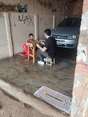
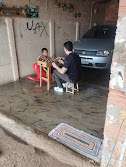
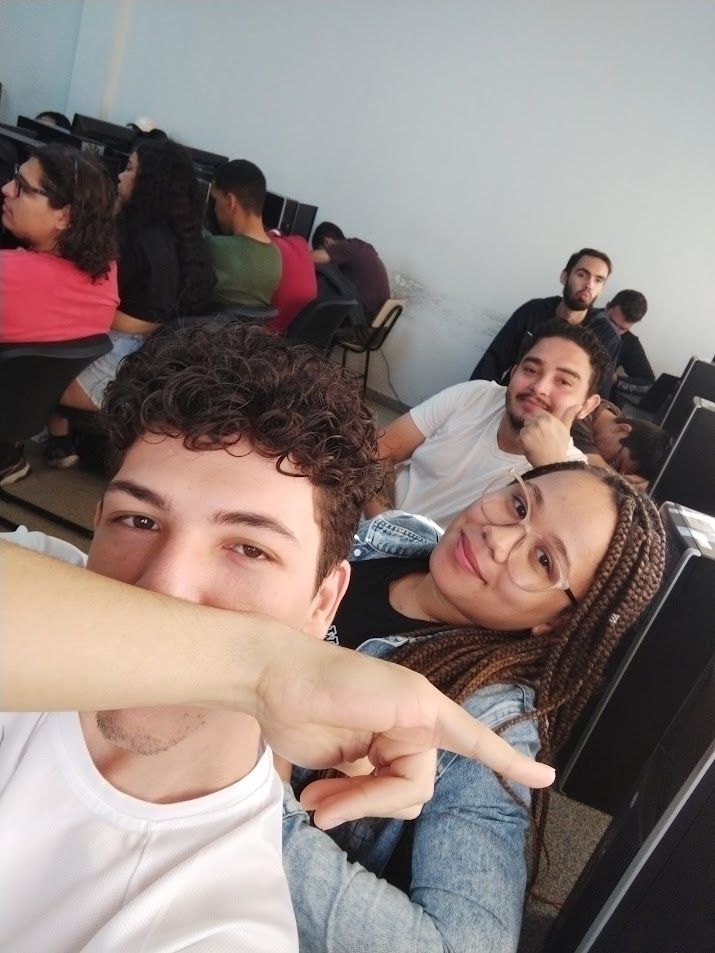
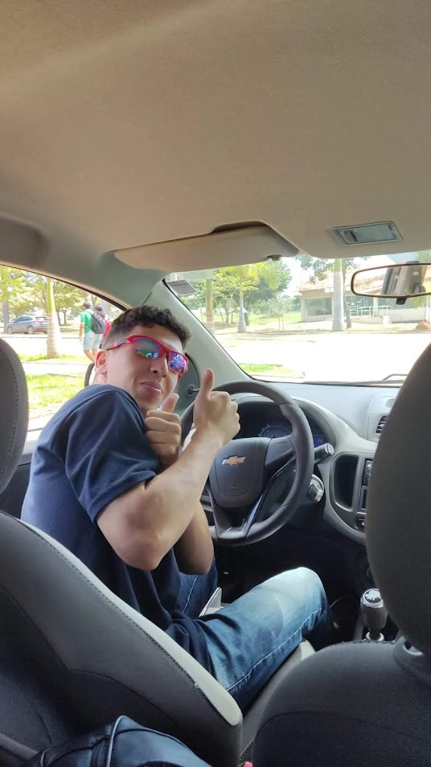
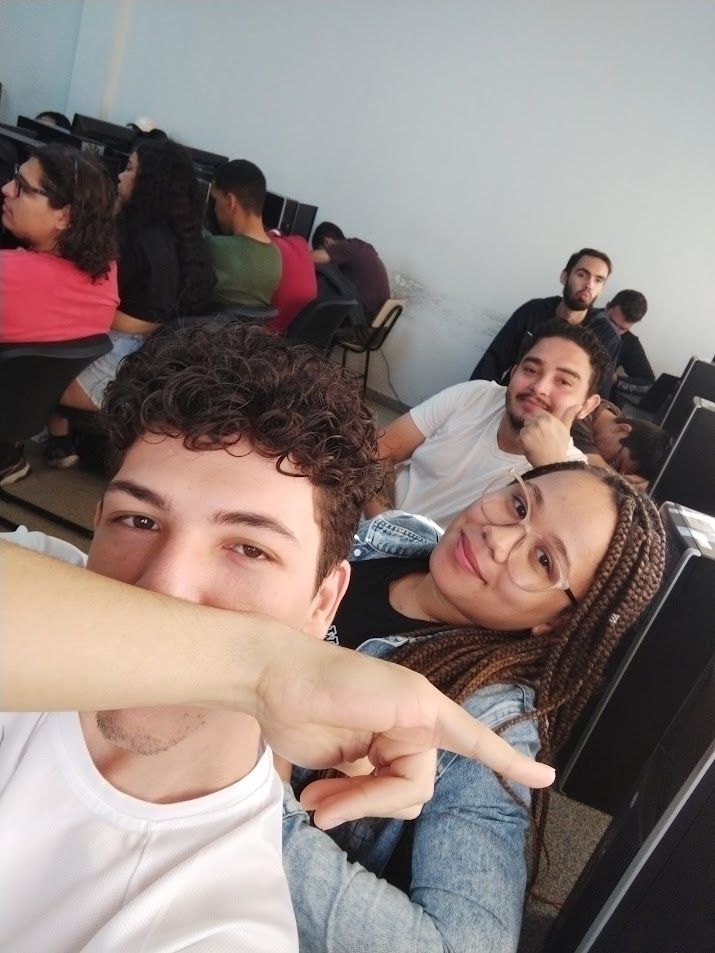
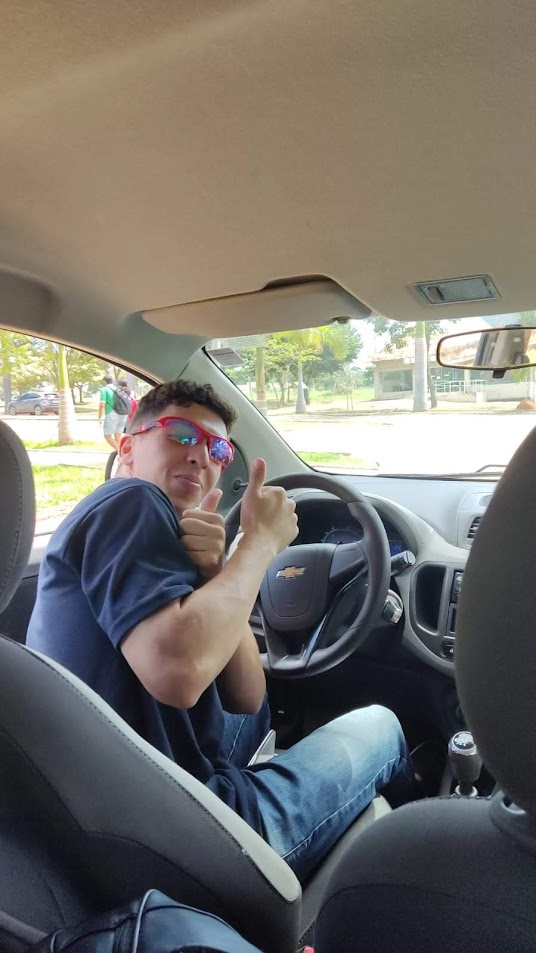
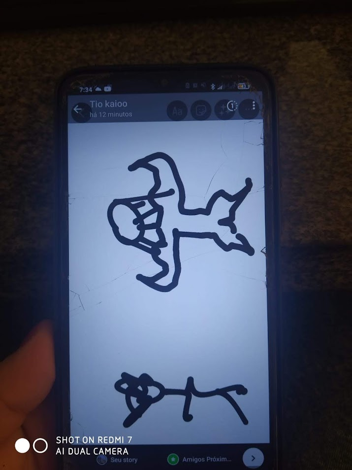
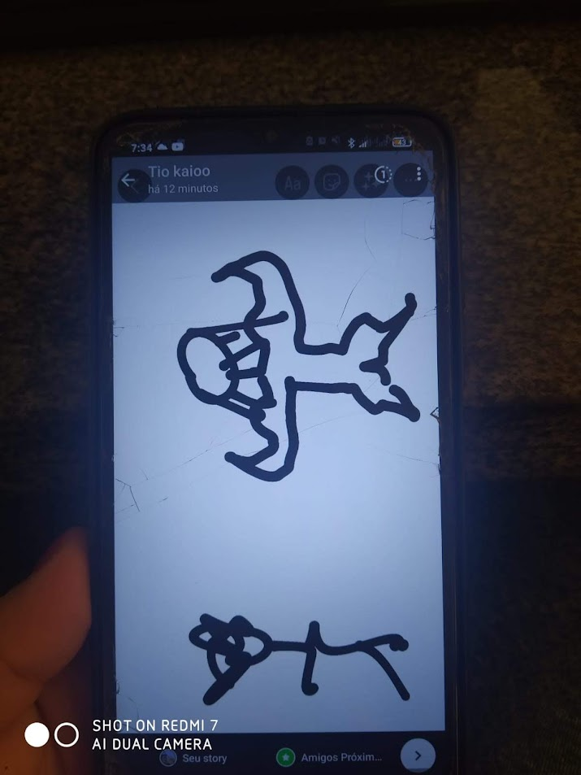
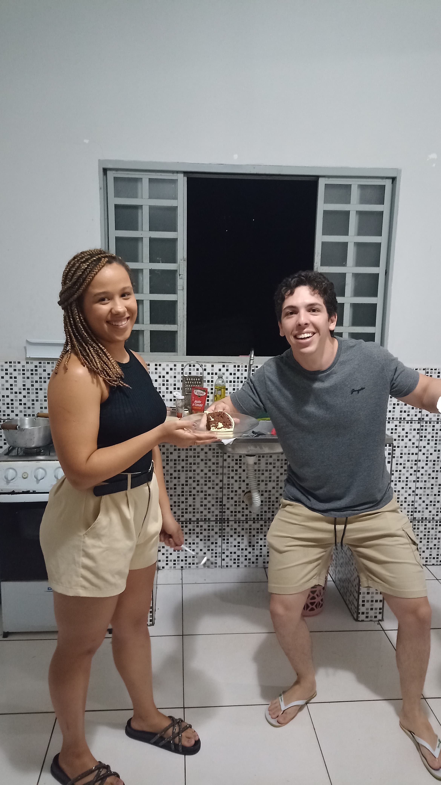
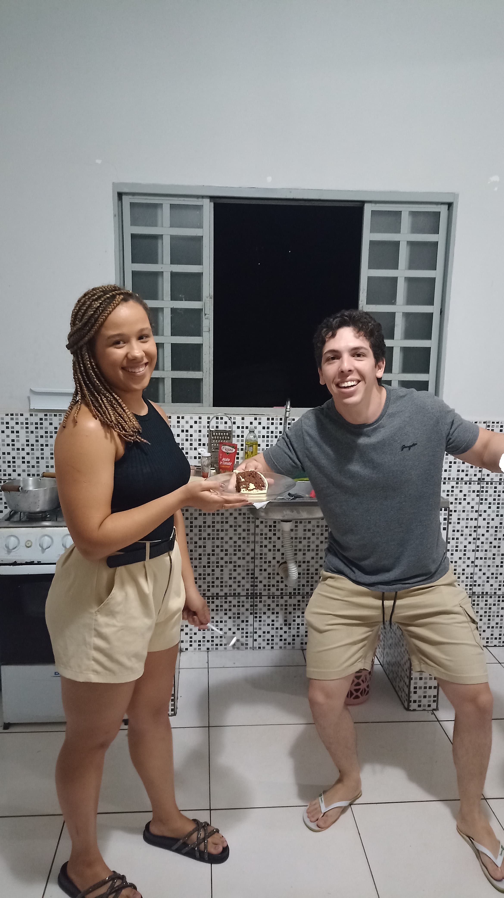

Kaio
Se tem uma coisa que o Kaio sabe fazer bem é ser mil e uma utilidades.
Coach motivacional nas horas de crise.
Personal trainer quando alguém diz "quero começar a treinar".
Psicólogo quando o mundo parece que vai desabar.
Brincalhão, sempre com uma piada pronta e um sorriso no rosto, ele é aquele tipo de amigo que você chama pra tudo — e ele topa!
Kaio é aquele cara que ajuda todo mundo, sempre com um conselho na manga e uma palavra que acalma.
Ser amigo do Kaio é rir, pensar, refletir… e no fim, perceber que ele tem razão.
Momentos com Kaio 📸


 


 



 

 
